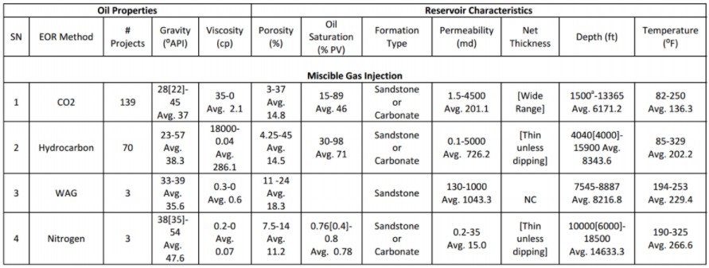
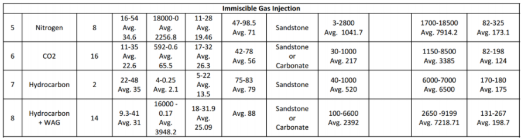
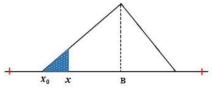
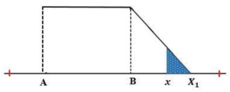
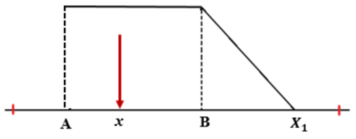
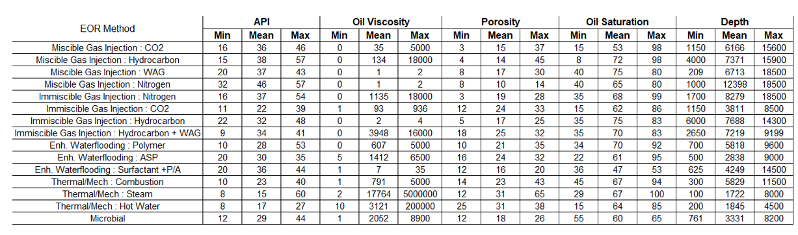

Bab 1 Screening EOR
1.1 Teori Dasar Statistik, Distribusi Probabilitas, dan Metode Numerik
1.1.1 Teori Dasar Statistik dan Probabilitas
Statistik adalah ilmu yang mempelajari cara mengumpulkan, mengatur, menganalisis, dan menginterpretasi data. Statistik dibagi menjadi dua, yaitu statistik deskriptif dan statistik inferensial. Statistik deskriptif membahas mengenai cara mengumpulkan dan mengatur data, sedangkan statistik inferensial membahas mengenai cara menganalisis data, yaitu analisis terhadap data sampel untuk memberikan kesimpulan mengenai populasi. Beberapa istilah yang digunakan dalam statistik, diantaranya:
- Populasi, yaitu total data dari sistem yang ingin dipelajari. Variabel yang menggambarkan populasi disebut parameter populasi. Parameter populasi yang penting untuk diketahui diantaranya: (a) Rata-rata (mean) populasi (dilambangkan \(\mu\) ), yaitu parameter yang memberikan informasi mengenai titik pusat dari data populasi; (b) Variance populasi (dilambangkan \(\sigma\)2, yaitu parameter yang memberikan informasi mengenai sebaran dat apopulasi. Standard deviasi populasi (dilambangkan \(\sigma\)) didefinisikan sebagai akar kuadrat dari variance populasi (\(\sqrt{\sigma^2}\)). Sama halnya dengan variance populasi, standard deviasi populasi juga memberikan informasi mengenai sebaran data populasi.
- Sampel, yaitu bagian dari populasi. Sampel harus dapat mewakili populasi. Sampel yang memenuhi kriteria ini disebut sebagai random sampel. Variabel yang menggambarkan sampel disebut statistik sampel. Statistik sampel yang penting untuk diketahui diantaranya: (a) Rata-rata (mean) sampel (dilambangkan \(\bar{x}\)), yaitu statistik yang memberikan informasi mengenai titik pusat dari data sampel. Mean sampel dihitung dengan menjumlahkan semua nilai numerik sampel, kemudian dibagi dengan jumlah anggota sampel; (b) Variance sampel (dilambangkan s2), yaitu parameter yang memberikan informasi mengenai sebaran data sampel. Standard deviasi sampel (dilambangkan s) didefinisikan sebagai akar kuadrat dari variance sampel (\(\sqrt{s^2}\)). Sama halnya dengan variance sampel, standard deviasi sampel memberikan informasi mengenai sebaran data sampel.
Dalam aplikasi, informasi mengenai parameter populasi seringkali tidak diketahui. Dalam kasus seperti ini, akan terlihat peranan penting dari statistik, yaitu kesimpulan mengenai populasi dapat dibuat melalui analisis sampel. Konsekuensi dari hal ini adalah terdapatnya ketidakpastian pada kesimpulan yang diperoleh. Adanya ketidakpastian uncertainty dalam kesimpulan merupakan hal yang tidak dapat dipisahkan dari statistik.
Dalam probabilitas dikenal istilah event, yaitu suatu kejadian yang muncul sebagai akibat dari eksperimen. Eksperimen didefinisikan sebagai suatu kegiatan yang dilakukan untuk memperoleh data atau nilai. Himpunan event keluaran (output) dari seluruh kemungkinan event yang muncul sebagai hasil dari suatu eksperimen disebut sebagai himpunan semesta atau ruang sampel. Ruang sampel disimbolkan dengan S.
Gambar 1.1: Definisi ruang sampel dan anggota sampel
1.1.1.1 Distribusi Probabilitas Kontinu
Seperti yang telah dijelaskan sebelumnya, probabilitas dapat didefinisikan sebagai peluang terjadinya suatu event atau peluang kemunculan suatu nilai dari suatu eksperimen. Eksperimen yang dimaksud di sini adalah ekperimen statistik, yaitu suatu proses yang menghasilkan data atau nilai numerik. Nilai probabilitas berada diantara 0 dan 1. Jika terdapat sekumpulan nilai, dan masing-masing nilai tersebut dikaitkan dengan probabilitas kejadiannya, maka akan diperoleh distribusi probabilitas.
Distribusi probabilitas dapat dibagi menjadi dua, yaitu distribusi probabilitas diskrit dan distribusi probabilitas kontinu. Fungsi yang menjelaskan suatu distribusi probabilitas dari variabel random diskrit disebut sebagai probability mass function, sedangkan fungsi yang menjelaskan suatu distribusi probabilitas dari variabel random kontinu disebut sebagai probability density function. Karena parameter reservoir merupakan variable random kontinu, maka penjelasan akan ditekankan pada teori probability density function.
Probability Density Funtion (disingkat PDF) adalah suatu fungsi f(x) yang memberikan bentuk distribusi probabilitas dari suatu variabel random kontinu. Konsep PDF sangat penting karena dengan mengetahui PDF dari suatu parameter, maka bentuk distribusi probabilitas dari parameter tersebut akan dapat diketahui. Misalkan, untuk parameter porositas reservoir, dengan mengetahui PDF dari porositas reservoir maka bentuk distribusi dari porositas akan diketahui. Secara matematis, PDF didefinisikan oleh persamaan berikut.\[P(a<X<b)=\int_a^{b}f(x)dx\] Beberapa sifat dari PDF adalah sebagai berikut:
- f(x) > 0, x \(\in\) S. Maksud dari simbol ini adalah PDF f selalu bernilai positif, dimana variabel random x merupakan anggota dari ruang sampel S.
- \(\int_s f(x)dx=1\). Maksudnya adalah total luas daerah di bawah kurva PDF selalu sama dengan 1, artinya nilai probabilitas total (untuk seluruh anggota ruang sampel S) adalah 1.
1.1.1.2 Distribusi Normal dan Standard Normal
Distribusi normal (disebut juga distribusi Gaussian) merupakan distribusi dari variabel random kontinu yang berbentuk mirip lonceng (“bell-shaped”). Distribusi normal didefinisikan oleh dua parameter, yaitu nilai rata-rata (\(\mu\)) dan standard deviasi (\(\sigma\)).
Gambar 1.2: Bentuk distribusi normal
Beberapa sifat dari distribusi normal adalah:
- Kurva distribusi normal berbentuk mirip lonceng (“bell-shaped”) dengan titik puncak kurva berada di atas nilai rata-rata (\(\mu\)),
- Kurva distribusi normal berbentuk simetri melalui nilai rata-rata (\(\mu\)), dan
- Kurva distribusi normal semakin mendekati sumbu horizontal namun tidak pernah menyentuh atau melewati sumbu horizontal.
Hal yang terpenting dari kurva distribusi normal adalah luas daerah di bawah kurva distribusi normal. Hal ini penting karena luas daerah di bawah kurva distribusi normal pada suatu interval tertentu menyatakan probabilitas suatu nilai berada pada interval tersebut. Sama seperti aturan distribusi probabilitas untuk semua distribusi probabilitas kontinu yang telah dijelaskan sebelumnya, total luas daerah di bawah kurva distribusi normal adalah 1. Gambar berikut memperlihatkan konsep ini.
Gambar 1.3: Total luas daerah di bawah kurva distribusi normal adalah 1
Gambar 1.4: Total luas daerah setengah dari total distribusi normal adalah 0.5
Maka, dengan mengetahui luas daerah di bawah kurva distribusi normal dalam suatu interval, probabilitas suatu nilai ada di dalam interval tersebut dapat diketahui. Hal lain yang perlu diketahui dari kurva distribusi normal adalah sebagai berikut:
- Sekitar 68.2% dari luas daerah di bawah kurva distribusi normal berada dalam interval satu standard deviasi dari nilai rata-ratanya, yaitu \(\mu\) + \(\sigma\) dan \(\mu\) – \(\sigma\),
- Sekitar 95.4% dari luas daerah di bawah kurva distribusi normal berada dalam interval dua standard deviasi dari nilai rata-ratanya, yaitu \(\mu\) + 2\(\sigma\) dan \(\mu\) – 2\(\sigma\), dan
- Sekitar 99.7% dari luas daerah di bawah kurva distribusi normal berada dalam interval tiga standard deviasi dari nilai rata-ratanya, yaitu \(\mu\) + 3\(\sigma\) dan \(\mu\) – 3\(\sigma\).
Dengan kata lain, suatu nilai yang merupakan anggota dari populasi nilai distribusi normal yang bersangkutan akan berada pada range ± 3 standard deviasi dari mean \(\mu\). Karena hampir seluruh nilai yang merupakan anggota populasi berada pada range ± 3 standard deviasi dari μ (dengan probabilitas 99.7%), maka dapat disimpulkan bahwa suatu nilai yang berada di luar range ± 3 standard deviasi dari \(\mu\) bukan merupakan anggota dari populasi yang bersangkutan (probabilitas nilai ini merupakan anggota dari populasi terkait sangat kecil, yaitu 100% - 99.7% = 0.3%).
Gambar 1.5: Luas daerah (probabilitas) di bawah kurva distribusi normal untuk masing-masing range standard deviasi dari mean
Probability Density Function (PDF) distribusi normal diberikan oleh persamaan berikut. \[f(x)=\frac{1}{\sigma\sqrt{2\pi}}e^{-\frac{(x-\mu)^2}{2\sigma^2}}...(4)\]
Menentukan luas daerah di bawah kurva distribusi normal tidaklah selalu mudah karena masing- masing distribusi normal memiliki nilai rata-rata \(\mu\) dan standard deviasi \(\sigma\) yang berbeda satu sama lain. Oleh karena itu, digunakanlah teori distribusi standard normal untuk mempermudah menghitung luas daerah di bawah kurva distribusi normal. Prosedur dalam menentukan luas daerah di bawah kurva normal adalah mentransformasi nilai x pada distribusi normal original menjadi nilai z pada distribusi standard normal. Statistik z disebut sebagai statistik standard normal, yaitu suatu parameter yang mengkarakterisasi nilai distribusi standard normal. Kemudian, luas daerah di bawah kurva standard normal ditentukan dengan melihat tabel luas daerah kurva standard normal yang telah disusun oleh para ahli statistik.
Konsep untuk mentransformasi kurva distribusi normal menjadi kurva standard normal adalah dengan menghitung berapa standard deviasi jauhnya suatu nilai x pada distribusi normal dari mean-nya. Setelah hal ini diketahui, maka nilai x dikonversi menjadi nilai z menggunakan persamaan berikut. \[z=\frac{x-\mu}{\sigma}...(5)\]
Distribusi normal original kini telah ditransformasi ke dalam distribusi standard normal dengan variabel z. Distribusi standard normal dicirikan dengan nilai rata-rata \(\mu\) = 0 dan standard deviasi \(\sigma\) = 1. Luas daerah (probabilitas) suatu nilai standard normal akan jatuh pada interval 0 dan z diperoleh dari kurva standard normal. Distribusi standard normal sangat berguna karena dapat mempermudah perhitungan probabilitas suatu nilai dalam distribusi normal.
1.1.1.3 Distribusi Segitiga (Triangular)
Distribusi segitiga merupakan bentuk distribusi kontinu yang dikarakterisasi oleh tiga titik, yaitu titik ujung bawah a, titik ujung atas b, dan titik tengah c, dimana a < b dan a ≤ c ≤ b.
Gambar 1.6: Distribusi segitiga
Probability Density Function (PDF) untuk distribusi segitiga diberikan oleh:
\[ f(x) = \begin{cases} 0,\ untuk\ x < a\ dan\ x > b\\ \frac{2(x-a)}{(b-a)(c-a)},\ untuk\ a \leq x \leq c \\ \frac{2(b-x)}{(b-a)(b-c)},\ untuk\ c \leq x \leq b \end{cases} \]
1.1.1.4 Distribusi Uniform
Distribusi uniform kontinu adalah bentuk distribusi dimana setiap anggota distribusi memiliki probabilitas kemunculan yang sama. Bentuk distribusi ini dicirikan oleh dua parameter, yaitu nilai minimum a, dan nilai maksimum b. Probability Density Function (PDF) dari distribusi uniform adalah:
\[ f(x)= \begin{cases} \frac{1}{b-a},\ untuk\ a \leq x \leq b\\ 0,\ untuk\ x > a\ atau\ x > b \end{cases} \]
Gambar 1.7: Distribusi uniform
1.1.1.5 Distribusi Log Normal
Distribusi log normal berkaitan dengan distribusi normal, sehingga parameter-parameter distribusi log normal dapat dinyatakan dalam bentuk parameter distribusi normal. Misalkan Y adalah suatu variabel random kontinu yang terdistribusi normal, maka variabel random kontinu = D akan terdistribusi log normal dengan:
Bentuk distribusi log normal adalah seperti distribusi normal namun miring ke kiri. Hal ini disebabkan karena distribusi normal memiliki skewness nol, sedangkan distribusi log normal memiliki skewness positif.
Gambar 1.8: Distribusi log normal
Mean dan variance dari variabel log normal X adalah: \[\mu_X = e^{(\mu+\frac{\sigma^2}{2})}\] \[\sigma^2_X = (e^{2\mu+\sigma^2})(e^{\sigma^2}-1\] Dimana \(\mu\) dan \(\sigma\)2 adalah mean dan variance dari variabel normal Y. Terlihat bahwa mean dan variance dari variabel log normal adalah fungsi dari mean dan variance variabel normal. Karena distribusi log normal dan distribusi normal saling berkaitan, maka Probability Density Function (PDF) dari distribusi log normal dinyatakan oleh parameter-parameter distribusi normal. \[f(x) = \frac{1}{x\sigma\sqrt{2\pi}}\ exp\ [-\frac{1}{2\sigma^2}(ln\ x-\mu)^2]\] Pada persamaan (8) di atas, \(\mu\) dan \(\sigma\)2 adalah mean dan variance dari variabel normal Y.
1.1.2 Metode Numerik
Dalam aplikasi, seringkali dijumpai permasalahan berupa penentuan akar (solusi) dari sebuah persamaan f(x) = 0. Jika f(x) adalah suatu fungsi sederhana, tentu solusinya akan mudah diperoleh secara eksak. Permasalahan timbul apabila fungsi f(x) adalah suatu fungsi kompleks yang solusinya tidak dapat diperoleh secara eksak. Untuk kasus-kasus dimana solusi dari fungsi f(x) tidak dapat diperoleh secara eksak, dilakukan pendekatan pencarian solusi secara numerik, yaitu dilakukan perubahan solusi secara bertahap dengan sedikit demi sedikit menambah tingkat ketelitian sampai diperoleh solusi dengan tingkat ketelitian yang diinginkan. Metode mencarisolusi seperti ini disebut sebagai metode approksimasi berurutan (method of successive approximation) atau disebut juga dengan metode iterasi. Metode iterasi tidak hanya harus diterapkan pada kasus-kasus yang tidak memiliki solusi eksak. Kasus-kasus sederhana yang solusi eksaknya ada pun dapat dicari pendekatan solusinya menggunakan metode iterasi. Bahkan, metode iterasi lebih disukai untuk digunakan di kasus-kasus sederhana oleh banyak orang karena metode ini kadang lebih mudah diterapkan dibandingkan mencari solusi eksak secara analitik.
Terdapat beberapa metode iterasi yang dapat digunakan untuk mencari solusi. Pada penelitian ini, metode iterasi yang digunakan adalah metode Newton-Raphson. Oleh karena itu, pada subbab ini, penjelasan metode numerik dibatasi pada metode Newton-Raphson.
Metode Newton-Raphson, yang juga sering disebut sebagai metode Newton adalah suatu metode numerik yang melibatkan turunan pertama dari fungsi f(x) dalam proses iterasi. Pada penelitian ini, metode Newton digunakan untuk mencari titik potong antara dua kurva distribusi, yaitu kurva distribusi database dan kurva distribusi input. Jika distribusi database memiliki density function f(x) dan distribusi input memiliki density function g(x), maka fungsi h(x) = f(x) - g(x) menyatakan selisih antara density database dengan density input. Nilai fungsi h(x) = 0 menyatakan titik potong antara kedua kurva f(x) dan g(x). Metode Newton diterapkan terhadap fungsi h(x) untuk mencari pendekatan solusi h(x) = 0. Hasil dari penerapan metode Newton adalah diperolehnya pendekatan nilai x dimana h(x) sangat dekat ke nol. Nilai x ini merupakan titik potong yang dicari.
Gambar 1.9: Titik xp merupakan titik potong antara kurva distribusi database dengan kurva distribusi input. Titik potong ini dicari menggunakan metode Newton-Raphson
Misalkan h(x) adalah fungsi yang dapat didiferensialkan dan misalkan x1 adalah tebakan awal solusi untuk h(x) = 0. Jika E melambangkan batas toleransi error dari solusi, maka metode Newton diterapkan dengan mengulangi langkah berikut untuk n = 1, 2 … sampai diperoleh |xn+1 - xn| < E: \[x_{n+1} = x_n - \frac{h(x_n)}{h'(x_n)}...(9)\] Persamaan (9) di atas merupakan prosedur perulangan (iterasi) untuk mencari solusi x yang sangat mendekati h(x) = 0. Prosedur iterasi dilakukan sampai dicapai suatu nilai konvergen (yang kemudian diambil sebagai solusi), atau sampai suatu batas error tertentu E, dimana E = |xn+1 - xn| Hal yang perlu diperhatikan dalam penggunaan metode Newton-Raphson adalah pemilihan tebakan awal untuk solusi. Permasalahan yang sering timbul adalah pemilihan tebakan awal yang terlalu jauh sehingga kekonvergenan lambat diperoleh, atau bahkan solusi konvergen tidak dapat diperoleh.
Setelah titik potong dari dua kurva distribusi diperoleh dari metode Newton, maka langkah selanjutnya adalah mencari luas daerah irisan dari kedua kurva distribusi tersebut (arsiran merah pada Gambar 9). Luas daerah irisan ini menyatakan probabilitas kecocokan distribusi input terhadap distribusi database.
Penentuan luas daerah irisan melibatkan penggunaan integral dari fungsi distribusi dalam suatu interval [a, b]. Metode numerik yang digunakan dalam penentuan luas daerah (integral) adalah metode Simpson (disebut juga metode Parabolik). Metode Simpson mencari pendekatan terhadap luas daerah dari suatu bangun ruang dengan membagi interval [a, b] ke dalam n jumlah sub-interval (n harus genap), dimana pada masing-masing sub-interval ditempatkan suatu bangun ruang parabola. Sehingga, akan terdapat n buah parabola di bawah suatu kurva f(x). Luas daerah di bawah kurva f(x) dapat didekati dengan menjumlahkan seluruh n buah parabola dalam interval [a, b].
Metode Simpson dinyatakan sebagai berikut. \[\int_a^bf(x)dx \approx \frac{h}{3}[f(x_0)+4f(x_1)+2f(x_2)+...+4f(x_{n-1})+f(x_n)]...(10)\] Pada persamaan (10) di atas, h adalah lebar sub-interval dan nilai-nilai 1, 4, 2, 4, 2, 4, 2,…, 2, 4, 1 adalah koefisien-koefisien yang terkait dengan setiap suku f(x).
1.2 Metode Analisis EOR Screening
Teori dasar yang telah dijelaskan di subbab pertama merupakan dasar yang akan digunakan untuk analisis EOR screening dalam subbab ini. Seperti yang telah disebutkan pada bagian pendahuluan, analisis dilakukan untuk mengetahui probabilitas kecocokan dari setiap parameter input reservoir (untuk setiap metode EOR) terhadap database. Database ini berupa interval nilai parameter reservoir untuk setiap metode EOR yang telah berhasil diterapkan di seluruh dunia. Database yang digunakan diambil dari paper Aladasani dan Baojun Bai (2010). Tabel berikut memperlihatkan database yang digunakan untuk EOR screening.
 

Gambar 1.10: Range nilai dari beberapa parameter reservoir terhadap setiap metode EOR yang telah sukses diterapkan di beberapa tempat di seluruh dunia. Range nilai ini akan dijadikan data acuan dalam analisis statistik. (Sumber: Ahmad Aladasani and Baojun Bai, 2010, Recent Developments and Updated Screening Criteria of Enhanced Oil Recovery Techniques, SPE Paper 130726)
Interval nilai parameter reservoir yang tertera di Gambar 10 akan digunakan sebagai acuan database dalam analisis. Metode analisis EOR screening terbagi atas metode analisis untuk input data single-value dan metode analisis untuk input data distribusi. Berikut akan dijelaskan kedua metode analisis ini.
1.2.1 Metode Analisis EOR Screening Untuk Input Data Single-Value
Input data single-value yang dimaksud di sini adalah parameter input berupa nilai tunggal, misalnya input porositas berupa satu nilai porositas yang mewakili distribusi porositas. Terdapat dua algoritma yang digunakan dalam EOR screening, yaitu algoritma normal dan algoritma tight. Bentuk distribusi probabilitas yang digunakan dalam analisis input data single value adalah distribusi segitiga.
1.2.1.1 Algoritma Normal (Normal Screening Algorithm)
Algoritma normal yang digunakan dalam EOR screening dibagi menjadi dua, yaitu algoritma statistik (statistics algorithm) dan algoritma teknik (engineering algorithm). Algoritma statistik adalah algoritma yang murni menggunakan konsep statistik dalam penentuan kriteria screening, sedangkan algoritma teknik adalah algoritma yang menyertakan faktor engineering sense ke dalam perhitungan screening.
Pada kedua algoritma, disertakan parameter cut-off. Parameter cut-off menyatakan tambahan data (berupa luas daerah) sebesar ±\(\alpha\)% dari distribusi data original. Parameter ini memungkinkan user untuk menentukan nilai probabilitas (sebesar \(\alpha\)%) saat parameter input x tepat jatuh di nilai maksimum atau nilai minimum database.
Gambar 1.11: Konsep cut-off dalam algoritma EOR screening
a. Algoritma Statistik (Statistics Algoritm)
Pada algoritma statistik, nilai rata-rata (mean) dari distribusi database digunakan sebagai acuan penentuan kecocokan 100% terhadap suatu metode EOR.

Gambar 1.12: Konsep algoritma statistik

Gambar 1.13: Konsep penentuan X0
\[X_0 = \frac{-b\ ±\ \sqrt{D} }{2a}...(11)\]
Dimana:
D = b2 - 4a
a = 1 - 2P
b = 4BP - 2A
c = A2 - 2PB2
A = nilai minimum dari database original
B = nilai rata-rata (mean) dari database original
P = probabilitas nilai di x = A (nyatakan P = \(\frac{\alpha}{100}\)).
Solusi X0 yang dipilih adalah yang memenuhi X0 < A
Gambar 1.14: Konsep penentuan X1
\[X_1 = \frac{-b\ ±\ \sqrt{D} }{2a}...(12)\]
Dimana:
D = b2 - 4a
a = 1 - 2P
b = 4BP - 2C
c = C2 - 2PB2
A = nilai maksimum dari database original
B = nilai rata-rata (mean) dari database original
P = probabilitas nilai di x = C (nyatakan P = \(\frac{\alpha}{100}\)).
Solusi X1 yang dipilih adalah yang memenuhi X1 > A
Setelah nilai X0 dan X1 diperoleh, maka langkah selanjutnya adalah menentukan probabilitas kecocokan. Probabilitas kecocokan suatu parameter input x terhadap database (dinyatakan oleh P(x) adalah sebagai berikut.
Untuk parameter input di bawah nilai mean dari database original (x < B)
Gambar 1.15: Perhitungan P(x) untuk nilai input x < B
\[P(x) = \left( \frac{1}{2}\frac{(x-X_0)^2}{(B-X_0)^2} \right) \times 2\ ...(13)\] Dimana:
x = nilai parameter input single value
X0 = nilai minimum database baru
B = nilai mean database originalUntuk parameter input di bawah nilai mean dari database original (x > B)

Gambar 1.16: Perhitungan P(x) untuk nilai input x > B
\[P(x) = \left( \frac{1}{2}\frac{(X_0-x)^2}{(X_1-B)^2} \right) \times 2\ ...(14)\] Dimana:
x = nilai parameter input single value
X1 = nilai maksimum database baru
B = nilai mean database original
Pada algoritma teknik, terdapat tiga tipe algoritma yang dapat dipilih oleh user, yaitu algoritma tipe average, algoritma tipe maksimum, dan algoritma tipe minimum.
(1) Algoritma Teknik Tipe Average
Algoritma tipe ini adalah algoritma yang sama dengan yang diterapkan pada algoritma statistik, dimana mean dari database dijadikan titik acuan penentuan kecocokan 100%.
Gambar 1.17: Konsep algoritma teknik tipe average
(2) Algoritma Teknik Tipe Minimum
Algoritma tipe ini menetapkan nilai kecocokan 100% untuk nilai parameter input di bawah nilai mean database original. Bentuk distribusi data yang digunakan adalah sebagai berikut.

Gambar 1.18: Konsep algoritma teknik tipe minimum
Langkah pertama dari algoritma adalah mencari nilai X1. Nilai X1 ditentukan sebagai berikut.
\[X_1 = \frac{-b\ ±\ \sqrt{D} }{2a}...(15)\]
Dimana:
D = b2 - 4a
a = 1 - P
b = 4BP - 2C
c = C2 - 2PB2
A = nilai maksimum dari database original
B = nilai rata-rata (mean) dari database original
P = probabilitas nilai di x = C (nyatakan P = \(\frac{\alpha}{100}\)).
Solusi X1 yang dipilih adalah yang memenuhi X1 > C
Setelah nilai X1 diperoleh, maka langkah selanjutnya adalah menentukan probabilitas kecocokan. Probabilitas kecocokan suatu parameter input x terhadap database (dinyatakan oleh P(x)) adalah sebagai berikut.
- Untuk parameter input di atas nilai mean dari database original (x > B)
\[P(x) = \left[\frac{(X_1-x)^2}{(X_1-B)^2} \right]...(16)\]
Gambar 1.19: Perhitungan P(x) untuk nilai input x > B
- Untuk parameter input di bawah nilai mean dari database original (x < B)
\[P(x) = 1...(17)\]
Gambar 1.20: Perhitungan P(x) untuk nilai input x < B
Algoritma tipe ini menetapkan nilai kecocokan 100% untuk nilai parameter input di atas nilai mean database original. Bentuk distribusi data yang digunakan adalah sebagai berikut.
Gambar 1.21: Konsep algoritma teknik tipe maksimum
Langkah pertama dari algoritma adalah mencari nilai X0. Nilai X0 ditentukan sebagai berikut.
\[X_0 = \frac{-b\ ±\ \sqrt{D} }{2a}...(18)\]
Dimana:
D = b2 - 4a
a = 1 - P
b = 2BP - 2A
c = A2 - 2PB2
A = nilai minimum dari database original
B = nilai rata-rata (mean) dari database original
P = probabilitas nilai di x = A (nyatakan P = \(\frac{\alpha}{100}\)).
Solusi X0 yang dipilih adalah yang memenuhi X0 < A.
Setelah nilai X0 diperoleh, maka langkah selanjutnya adalah menentukan probabilitas kecocokan. Probabilitas kecocokan suatu parameter input x terhadap database (dinyatakan oleh P(x)) adalah sebagai berikut.
- Untuk parameter input di bawah nilai mean dari database original (x < B)
\[P(x) = \left[\frac{(x-X_0)^2}{(B-X_0)^2}\right] ...(19)\]

Gambar 1.22: Perhitungan P(x) untuk nilai input x < B
- Untuk parameter input di atas nilai mean dari database original (x < B)
\[P(x) = 1...(17)\]

Gambar 1.23: Perhitungan P(x) untuk nilai input x > B
1.2.1.2 Algoritma Tight (Tight Screening Algorithm)
Algoritma tight diterapkan pada hasil (score) algoritma normal. Algoritma ini menerapkan prosedur tambahan dalam perhitungan dengan cara mempertimbangkan banyak dan besarnya nilai unmatch dari score algoritma normal, sehingga metode EOR yang memiliki nilai unmatch akan mengalami perubahan peringkat sesuai dengan banyaknya jumlah nilai unmatch dan besarnya nilai unmatch.
Algoritma tight diterapkan menggunakan sejumlah parameter berikut.Score dari algoritma tight screening dinyatakan oleh:
1.2.1.3 Perhitungan Total Probabilitas Kecocokan
Total probabilitas kecocokan suatu metode EOR terhadap database dihitung menggunakan persamaan yang melibatkan hasil kali antara probabilitas kecocokan individu per parameter dengan nilai weighting factor. Persamaan ini berlaku baik pada algoritma statistik maupun algoritma teknik.
\[Probability\ (average\ score) = \frac{w_1F_1+w_2F_2+...+w_8F_8}{w_1+w_2+...+w_8}\]
\[Probability\ (average\ score) = \frac{\sum_{j=1}^{8}w_jF_j }{\sum_{j=1}^{8}w_j}...(22)\]
Dimana:
wi = weighting factor parameter ke-i
Fi = parameter input ke-i
1.2.1.4 Algoritma Penalty Factor Dalam EOR Screening
Dalam EOR screening, diterapkan algoritma tambahan untuk mengakomodasi input user yang berada di luar database. Algoritma ini disebut dengan algoritma penalty factor. Algoritma penalty factor mengakomodasi seberapa jauh nilai input user yang berada di luar database. Maka, semakin jauh nilai input user dari database, nilai probabilitas total menjadi semakin kecil dan menurunkan peringkat metode EOR terkait dalam peringkat kecocokan. Algoritma penalty factor memberikan nilai kecocokan negatif.
Algoritma penalty factor diterapkan untuk setiap tipe algoritma screening yang digunakan, termasuk algoritma screening tipe average, maksimum, dan minimum. Persamaan-persamaan yang digunakan untuk setiap algoritma adalah sebagai berikut.
a. Algoritma Tipe AverageUntuk algoritma tipe average, penalty factor diterapkan baik untuk kasus input user di bawah minimum database maupun untuk kasus input user di atas maksimum database.
Gambar 1.24: Penalty factor untuk algoritma tipe average
Untuk nilai input > nilai maksimum database, \[Penalty\ Factor\ = \frac{maxDB\ -\ nilai\ input}{maxDB\ -\ minDB}...(23)\] Untuk nilai input < nilai minimum database, \[Penalty\ Factor\ = \frac{nilai\ input\ -\ minDB}{maxDB\ -\ minDB}...(24)\]
b. Algoritma Tipe Minimum
Untuk algoritma tipe minimum, penalty factor diterapkan hanya untuk untuk kasus input user yang berada di atas nilai maksimum database.

Gambar 1.25: Penalty factor untuk algoritma tipe minimum
b. Algoritma Tipe Maksimum
Untuk algoritma tipe minimum, penalty factor diterapkan hanya untuk untuk kasus input user yang berada di bawah nilai maksimum database.

Gambar 1.26: Penalty factor untuk algoritma tipe maksimum
\[Penalty\ Factor\ = \frac{nilai\ input\ -\ minDB}{maxDB\ -\ minDB}...(26)\]
Sedangkan, untuk kasus input distribusi, algoritma penalty factor diterapkan sama seperti pada kasus input single value untuk tipe algoritma average.
1.2.2 Metode Analisis EOR Screening Untuk Input Data Distribusi
Untuk kasus input data distribusi, maka input dari user berupa parameter-parameter dari distribusi input, seperti mean, standard deviasi, nilai minimum, dan nilai maksimum. Pada kasus distribusi,terdapat dua jenis distribusi yang terlibat, yaitu distribusi database dan distribusi input.
Database yang digunakan adalah interval nilai dengan nilai minimum, nilai maksimum, dan nilai rata-rata, sehingga hanya ada tiga nilai yang diketahui. Oleh karena itu, pada penelitian ini,distribusi database selalu diasumsikan mengikuti distribusi triangular (segitiga) dengan density function seperti yang dinyatakan dalam persamaan (6). Untuk distribusi input, user dapat memilihempat pilihan distribusi, yaitu distribusi segitiga, distribusi normal, distribusi uniform, dan distribusi log normal. Probabilitas kecocokan distribusi input terhadap distribusi database diperoleh dengan menghitung luas daerah irisan antara dua distribusi probabilitas ini. Gambar berikut memperlihatkan ide dari metode analisis yang digunakan untuk kasus input distribusi.Gambar 1.27: Daerah irisan dari distribusi input dan distribusi database
Bagian kurva yang diarsir dengan warna merah pada gambar di atas memperlihatkan contoh daerah irisan dari dua kurva distribusi, yaitu kurva distribusi database (segitiga) dan kurva distribusi input (normal). Titik potong kurva (x) dicari dengan menggunakan metode numerik Newton-Raphson. Setelah titik potong kurva diperoleh, luas daerah irisan dihitung menggunakan aturan Simpson, seperti yang telah dijelaskan sebelumnya.
Berdasarkan penjelasan sebelumnya, maka terdapat empat kasus yang melibatkan pasangan distribusi database – distribusi input, yaitu:
- Kasus pasangan distribusi segitiga – distribusi segitiga
- Kasus pasangan distribusi segitiga – distribusi normal
- Kasus pasangan distribusi segitiga – distribusi uniform
- Kasus pasangan distribusi segitiga – distribusi log normal.
Secara umum, pengembangan algoritma untuk setiap pasangan distribusi database distribusi input dibagi ke dalam enam tipe algoritma yang berlaku untuk enam kasus berikut:
(1) Distribusi database dan distribusi input tidak berpotonganDistribusi database dan distribusi input tidak berpotongan jika interval distribusi input berada di luar interval distribusi database. Gambar di bawah memperlihatkan contoh kasus ini untuk pasangan distribusi database segitiga distribusi input normal. Karena kedua kurva distribusi tidak berpotongan, maka tidak terdapat daerah irisan antara dua distribusi ini, sehingga probabilitas kecocokan distribusi input terhadap distribusi database adalah nol.

Gambar 1.28: Distribusi input dan distribusi database tidak berpotongan
(2) Distribusi database dan distribusi input identik
Hal ini terjadi jika distribusi database dan distribusi input memiliki bentuk distribusi yang sama dengan parameter-parameter nilai minimum, nilai maksimum, nilai mean, dan nilai standard deviasi yang sama. Dengan kata lain, distribusi database dan distribusi input adalah dua distribusi identik. Karena dua distribusi identik, maka daerah irisan antara kedua distribusi ini meliputi seluruh daerah di bawah kurva kedua distribusi, sehingga probabilitas kecocokan distribusi input terhadap distribusi database adalah 100%.

Gambar 1.29: Distribusi input dan distribusi database merupakan distribusi identik
(3) Distribusi input beririsan dengan distribusi database di sisi kiri distribusi database
Untuk kasus ini, terdapat satu titik potong antara kurva distribusi database dan kurva distribusi input. Gambar di bawah memperlihatkan contoh untuk kasus ini.

Gambar 1.30: Daerah irisan berada di sisi kiri kurva distribusi database
Pengembangan algoritma untuk kasus ini adalah sebagai berikut. Pertama, titik potong kurva dicari dengan menggunakan metode Newton. Fungsi yang digunakan dalam iterasi Newton adalah selisih antara kedua density function dari distribusi database dan distribusi input. Jika distribusi database memiliki density function f(x) dan distribusi input memiliki density function g(x), maka fungsi h(x) = f(x) − g(x) menyatakan selisih dari fungsi distribusi database dan fungsi distribusi input.
Titik potong antara kedua kurva adalah suatu titik x pada kurva dimana nilai fungsi h(x) adalah nol. Nilai h(x) nol adalah solusi eksak, sedangkan metode Newton adalah metode mencari solusi secara numerik. Oleh karena itu, dibutuhkan penyesuaian terhadap solusi numerik. Untuk solusi numerik, titik potong kurva dinyatakan oleh suatu titik x pada kurva dimana nilai fungsi h(x) sangat dekat dengan nol dengan tingkat kesalahan E. Tingkat kesalahan E yang digunakan pada algoritma adalah 10-7. Sehingga, solusi titik potong x secara numerik adalah nilai dimana titik perulangan xn+1 memenuhi |xn+1 − xn| ≤ E.
Setelah titik potong kurva diperoleh, langkah selanjutnya adalah menghitung luas daerah irisan antara dua kurva distribusi. Luas daerah irisan ini diperlihatkan di gambar dengan arsiran merah. Luas daerah irisan menyatakan probabilitas kecocokan ditribusi input terhadap distribusi database. Secara umum, untuk daerah irisan berada di sisi kiri kurva distribusi database, luas daerah dihitung dengan cara berikut. \[Luas\ Daerah\ arsiran\ = \int_{min.db}^{x_p}g(x)dx\ +\ \int_{x_p}^{max.input}f(x)dx...(27) \] Dimana \(\int_{min.db}^{x_p}g(x)dx\) dan \(\int_{x_p}^{max.input}f(x)dx\) dihitung menggunakan aturan Simpson.(4) Distribusi input beririsan dengan distribusi database di sisi kanan distribusi database
Kasus ini masih melibatkan satu titik potong. Contoh kasus ini diperlihatkan pada hambar berikut.
Gambar 1.31: Daerah irisan berada di sisi kanan kurva distribusi database
(5) Interval distribusi input berada di dalam interval distribusi database
Berbeda dengan kasus (3) dan (4), kasus ini memiliki dua titik potong. Pada dasarnya, langkah-langkah pengembangan algoritma untuk dua titik potong sama seperti kasus satu titik potong, yaitu penentuan titik potong (dalam hal ini terdapat dua titik potong) kemudian menghitung luas daerah arsiran untuk mengetahui probabilitas kecocokan distribusi input terhadap distribusi database.

Gambar 1.32: Kasus interval distribusi input berada di dalam distribusi database
(6) Interval distribusi database berada di dalam interval distribusi input
Sama seperti kasus (5), kasus ini melibatkan dua titik potong. Langkah-langkah pengembangan algoritma sama seperti kasus-kasus sebelumnya, yaitu penentuan titik potong yang dilanjutkan dengan perhitungan luas daerah arsiran untuk mengetahui probabilitas kecocokan distribusi input terhadap distribusi database.

Gambar 1.33: Kasus interval distribusi database berada di dalam distribusi input
Luas daerah arsiran adalah: \[Luas\ daerah\ arsiran\ = \int_{min.input}^{x_{p_1}}f_1(x)dx\ +\ \int_{x_{p_1}}^{\mu}g(x)dx\ +\ \int_{\mu}^{x_{p_2}}g(x)dx\ +\ \int_{x_{p_2}}^{max.input}f_2(x)dx...(30)\] Masing-masing integral di atas dihitung menggunakan aturan Simpson.
Masing-masing keenam kasus di atas berlaku untuk keempat pasangan distribusi database – distribusi input. Langkah-langkah pengembangan algoritma adalah sama untuk setiap pasangan distribusi database – distribusi input. Perbedaannya terletak pada fungsi g(x) yang menyatakan density function dari distribusi input. Karena terdapat empat pilihan distribusi input, maka terdapat empat pilihan fungsi g(x) yang berbeda bersesuaian dengan tipe distribusi input yang dipilih oleh user. Secara umum, diagram alir algoritma untuk kasus input berupa distribusi diperlihatkan pada gambar berikut.

Gambar 1.34: Diagram alir algoritma EOR screening untuk kasus distribusi
1.3 Update Screening EOR
1.3.1 Update Database Screening EOR
Untuk menambah tingkat akurasi proses screening EOR yang lebih baik maka perlu dilakukan penambahan data-data proyek EOR terbaru untuk memperbanyak referensi. Sebelum dilakukan penambahan data terbaru, Perta-EOR memiliki tiga sumber data, yaitu Aladasani dan Baoujun Bai, Taber, dan Combination.
Kemudian saat ini, data diperbarui dengan menambah data yang bersumber dari Oil & Gas Journal seperti yang dapat dilihat pada Tabel 1.1. Adapun data Oil & Gas Journal diperoleh dengan menggabungkan data Oil & Gas Journal 2016 dan data EOR Data Group yang dimuat oleh Missouri University of Science and Technology. Nilai-nilai untuk setiap parameter screening EOR yang bersumber dari Oil & Gas Journal secara umum terlihat seperti pada Gambar 1.35. Data-data yang sudah dikumpulkan tersebut juga telah diperiksa kualitas datanya karena tidak semua data dapat digunakan. Data yang dipilih hanya data yang menghasilkan proyek yang sukses dan menguntungkan sedangkan untuk data yang menghasilkan proyek yang gagal tidak dipilih.
| Sebelum Update | Setelah Update |
|---|---|
| Aladasani & Baoujun Bai | Aladasani & Baoujun Bai (2010) |
| Taber | Taber (1997) |
| Combination | Aladasani & Baoujun Bai + Taber |
| Oil & Gas Journal (2016/2020) |

Gambar 1.35: Persebaran penerapan metode EOR di seluruh dunia

Gambar 1.36: Peta persebaran aplikasi EOR
Setelah data digabungkan, persebaran metode EOR yang berada di beberapa negara secara umum dapat dilihat pada Gambar 1.35 dan Gambar 1.36. Data proyek EOR yang dimiliki saat ini tersebar di beberapa negara dan benua. Data-data untuk menjadi refrensi screening EOR saat ini didominasi dari proyek-proyek EOR yang dilakukan di Amerika Serikat dengan jumlah 226 proyek yang terdiri dari 11 metode EOR. Kemudian dari data-data tersebut juga dapat disimpulkan bahwa terdapat dua metode EOR yang umum dilakukan, yaitu Steam Injection dan Miscible CO2 Injection.

Gambar 1.37: Summary database EOR
1.3.2 Penambahan Parameter pada Screening EOR
Untuk melakukan screening EOR yang lebih komprehensif dan akurat, diperlukan data-data karakteristik reservoir yang lengkap guna mengurangi banyaknya asumsi yang dipakai dalam analisa perhitungan kualitatif. Pada perangkat lunak PertaEOR-Lite versi sebelumnya belum didapat ada pertimbangan mengenai ketebalan reservoir beserta kemiringannya dan komposisi rantai hidrokarbon yang terdapat pada fluida terproduksi, padahal karakteristik tersebut cukup penting dalam tahap screening EOR yang pernah dilakukan sebelumnya. Tabel. 2 memperlihatkan perbedaan karakteristik reservoir pada PertaEOR-Lite versi 3 dan PertaEOR-Lite versi 4.
| Parameter | PertaEOR-Lite V3 | PertaEOR-Lite V4 |
|---|---|---|
| API Gravity | v | v |
| Oil Viscosity | v | v |
| Porosity | v | v |
| Oil Saturation | v | v |
| Depth | v | v |
| Temperature | v | v |
| Permeability | v | v |
| Formation | v | v |
| Thickness | - | v |
| Composition | - | v |
1.3.2.1 Penambahan Parameter Net Thickness
1.3.2.1.1 Update Database Net Thickness pada Data Referensi
Untuk penambahan parameter net thickness, perlu terlebih dahulu melihat karakteristik data reference untuk mengetahui tipe data seperti apa yang tersedia. Tipe data parameter net thickness yang didapat ternyata memiliki kesamaan terhadap parameter-parameter lainnya yaitu bertipe single value dan distribution value dimana artinya beberapa data net thickness lapangan-lapangan yang didapat, memiliki satu value= atau berbentuk range (maksimum minimum).
Gambar 1.38: Tampilan input net thickness pada PertaEOR untuk single value dan distribution value
1.3.2.1.2 Scoring Net Thickness
Perhitungan score dari parameter net thickness didapat dengan menggunakan algoritma yang sama dengan algoritma yang dipakai PertaEOR-Lite versi 3 dalam menghitung parameter-parameter lainnya. Scoring net thickness menggunakan weighting sebesar 1 dan average algorithm dalam perhitungannya serta dilibatkannya juga parameter net thickness tambahan yaitu sudut kemiringan (dipping) dikarenakan pada metode EOR gas kemiringan sangat berpengaruh pada hasil produksinya akibat dari bertambah besarnya gravity drainage driving mechanism pada reservoir tersebut. Berikut adalah daftar EOR yang terpengaruh akibat adanya dipping:
- Miscible Gas Injection: Hydrocarbon
- Miscible Gas Injection: CO2
- Miscible Gas Injection: WAG
- Miscible Gas Injection: Nitrogen
- Immiscible Gas Injection: Nitrogen
- Immiscible Gas Injection: CO2
- Immiscible Gas Injection: Hydrocarbon
- Immiscible Gas Injection: Hydrocarbon + WAG

Gambar 1.39: Perbandingan hasil perhitungan menggunakan parameter dipping
1.3.2.2 Penambahan Parameter Composition
1.3.2.2.1 Update Data Composition pada Data Referensi
Database screening EOR diperbaharui menggunakan rangkuman data milik Taber (1997) dimana ada konsiderasi parameter tambahan yaitu favourable composition atau bisa disebut juga sebagai komponen-komponen yang berdampak baik dalam perhitungan screening EOR, dimana setiap metode EOR memiliki favourable composition yang berbeda-beda dari rentang C1 sampai dengan C12, dan juga komponen-komponen lain penunjang EOR seperti organic acid dan asphaltic component. Dalam menentukan nilai min, mean, dan max, telah dilakukan studi literatur untuk mencari data komposisi untuk setiap favourable component. Berdasarkan data yang telah ditabulasikan pada Tabel 1.3, dapat diambil suatu nilai tengah dari setiap favourable component untuk menentukan nilai mean dan untuk penentuan nilai min dan max dilakukan pendekatan secara engineering sense dengan menggunakan margin 0.3 sebagai dasar penentuan yang dapat dilihat pada Tabel 1.3.
| Field/Reservoir/Well | EOR Method | Favourable Based on Taber | Mole Fration | |
|---|---|---|---|---|
| Niobrara | Miscible HC | C1-C7 | 0.676 | |
| Cario Mulata | Miscible HC | C1-C7 | 0.6725 | |
| Eagle Ford, Texas | Miscible CO2 | C2-C7 | 0.4 | |
| Pilot Field X | Miscible CO2 | C2-C7 | 0.35 | |
| Schrader Bluff Alaska | Miscible CO2 | C2-C7 | 0.3 | |
| Weyburn | Miscible CO2 | C2-C7 | 0.458 | |
| Pourhadi, Iran | Miscible CO2 | C2-C7 | 0.45 | |
| Iran ideal solution | Immiscible CO2 | C5-C12 | 0.564 |
1.3.2.2.2 Scoring Composition
Scoring pada parameter composition menggunakan algoritma yang sama dengan yang digunakan PertaEOR-Lite dalam menghitung parameter-parameter lainnya. Scoring ini menggunakan weighting factor sebesar 1 dan maximum algorithm.
Apabila terdapat Organic Acid pada reservoir tersebut, skor untuk metode Enhanced Waterflooding ASP dan Enhanced Waterflooding Surfactant + P/A, akan diberi multiplier sebesar 1.25 dikarenakan organic acid dapat menurunkan efek interfacial tensions pada metode EOR tersebut. Untuk metode Thermal Combustion akan diberi additional score sebesar 100% apabila reservoir memiliki asphaltic component dan nilai 50% apabila tidak memiliki asphaltic component, karena thermal combustion dapat menyebabkan efek coke deposition dimana reservoir yang tidak memiliki cukup coke deposition akan menyebabkan proses thermal combustion tidak bertahan lama dan mengakibatkan terbentuknya parafin pada minyak.
1.3.3 Benchmark EOR Screening
Implementasi algoritma baru pada proses screening EOR yang telah ditambahkan dua parameter baru: thickness dan composition, perlu melalui proses validasi untuk mengetahui tingkat akurasinya. Validasi dilakukan dengan menggunakan data proyek-proyek EOR yang telah berhasil mengimplementasikan EOR di beberapa lapangan seperti yang dapat dilihat pada tabel di bawah ini.Gambar 1.40: Parameter screening EOR di beberapa lapangan
Gambar 1.41: Hasil screening PertaEOR-Lite
Gambar 1.42: Parameter screening EOR di Lapangan Southwest of Iran
Gambar 1.43: Hasil screening EOR di apangan Southwest of Iran